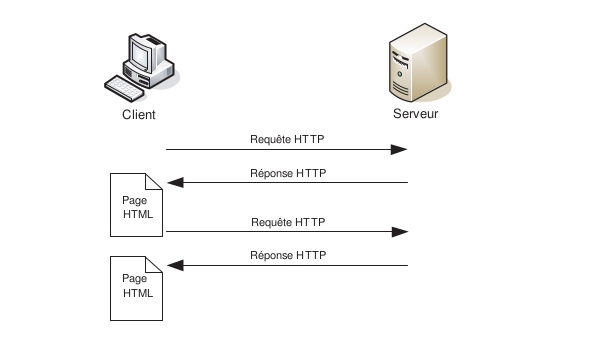
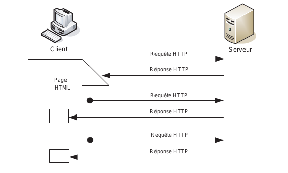

Inventé début 2005 par Jesse J. Garrett, le terme AJAX (Asynchronous JavaScript And XML) désigne un ensemble de technologies existant depuis plusieurs années, dont une utilisation ingénieuse rend possibles des fonctionnalités Web novatrices et utiles, qui rencontrent un succès grandissant depuis l’apparition d’applications telles que Google Suggest, Google Maps, writely, etc.
Grâce à Ajax, il est possible de bâtir des applications Web au comportement très proche de celui des applications Windows ou MacOS natives. L’avantage essentiel d’Ajax réside dans une plus grande réactivité de l’interface par rapport au Web classique.
Dans une application Web classique, lorsque l’utilisateur clique sur un lien ou valide un formulaire, le navigateur envoie une requête au serveur HTTP, qui lui retourne en
réponse une nouvelle page, qui remplace purement et simplement la page courante.

Dans l’exemple ecommerce, lorsque l’utilisateur change la quantité d’un produit dans son panier, une requête HTTP est envoyée par JavaScript. À réception de la réponse, seules les trois zones concernées sont mises à jour. Le volume transitant sur le réseau est ainsi réduit, de même que le travail demandé au serveur, qui n’a plus à reconstruire toute la page. La communication peut dés lors être plus rapide

La deuxième caractéristique d’Ajax est que la communication avec le serveur via
JavaScript peut être asynchrone. La requête est envoyée au serveur sans attendre la
réponse, le traitement à effectuer à la réception de celle-ci étant spécifié auparavant.
JavaScript se charge d’exécuter ce traitement quand la réponse arrive. L’utilisateur peut
de la sorte continuer à interagir avec l’application, sans être bloqué par l’attente de la
réponse, contrairement au Web classique. Cette caractéristique est aussi importante que
la mise à jour partielle des pages.
Exemples de Frameworks Javascript
| Nom |
Définition |
Apparition |
| Angular 2 |
MVC Framework |
2016 |
| React Js |
Javascript Library |
2013 |
| Ember Js |
MVC Framework |
2011 |